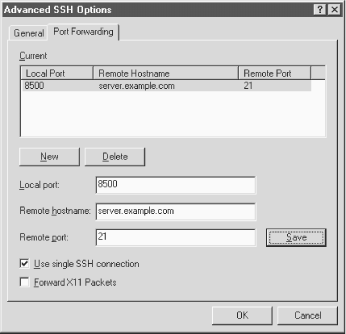

15.5. Forwarding
SecureCRT
supports the SSH feature called forwarding (
Chapter 9, "Port Forwarding and X Forwarding"), in which another network connection can be
passed through SSH to encrypt it. It is also called tunneling because
the SSH connection provides a secure "tunnel" through
which another connection may pass. Both TCP port forwarding and X
forwarding are supported.
15.5.1. Port Forwarding
Port forwarding permits an arbitrary TCP connection to be routed
through an SSH connection, transparently encrypting its data. [
Section 9.2, "Port Forwarding"] This turns an insecure TCP connection, such as
Telnet, IMAP, or NNTP (Usenet news), into a secure one. SecureCRT
supports local port forwarding, meaning that your local SSH client
(SecureCRT) forwards the connection to a remote SSH server.
Each SecureCRT session you create may each have different port
forwardings set up. To set up forwarding to a particular remote host,
disconnect from that host (if you're connected) and open the
Session Options window. Click the Advanced button and the Port
Forwarding tab. Here's where you create port forwardings (see
Figure 15-2).

Figure 15-2. SecureCRT Port Forwarding tab
To create a new forwarding, first click the New button. Then fill in
the name of the remote host where the TCP service (e.g., IMAP or
NNTP) is found, the remote port number for that service, and finally,
a local port number (on your PC) to use for the forwarding. This can
be just about any number, but for tradition's sake, make it
1024 or higher. Choose a local port number that's not being
used by any other SSH client on your PC
When you're done, click Save to save the forwarding. Then
reopen your SSH connection, and your desired TCP port will be
forwarded for the duration of your connection.
15.5.2. X Forwarding
The X Window System is the most
popular windowing software for Unix machines. If you want to run
remote X clients that open windows on your PC, you need:
- A remote host, running an SSH server, that has X client programs
available
- An X server running on your PC under Windows, such as
Hummingbird's eXceed
SSH makes your X connection secure by a process called X forwarding.
Section 9.3, "X Forwarding" Turning on X forwarding is trivial in
SecureCRT. Simply put a checkmark in the checkbox "Forward X11
Packets." It is found in the Session Options window: click the
Advanced button, and select the Port Forwarding tab.
To secure an X connection by forwarding it through SSH, first run
SecureCRT and establish a secure terminal connection to the SSH
server machine. Then run your PC's X server, disabling its
login features such as XDM. Now simply invoke X clients on the server
machine.
 |  |  |
| 15.4. Advanced Client Use |  | 15.6. Troubleshooting |